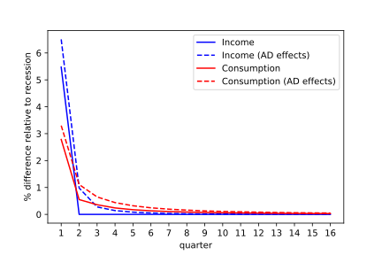
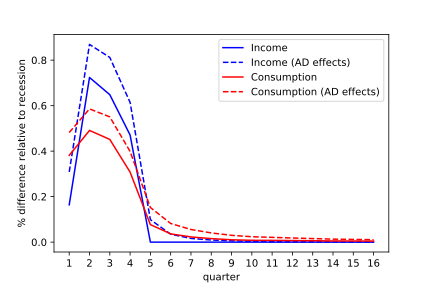
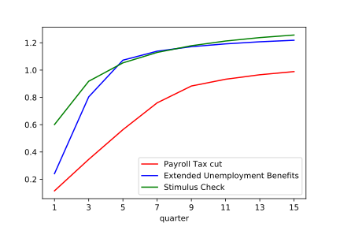

| html: | https://llorracc.github.io/HAFiscal/ |
| PDF: | HAFiscal.pdf |
| GitHub: | https://github.com/llorracc/HAFiscal |
1Carroll: Department of Economics, Johns Hopkins University, ccarroll@jhu.edu, and NBER .
2Crawley: Federal Reserve Board, edmund.s.crawley@frb.gov
3Frankovic: Deutsche Bundesbank, ivan.frankovic@bundesbank.de
4Tretvoll: Statistics Norway, Hakon.Tretvoll@ssb.no
Fiscal policies that aim to boost consumer spending in recessions have been tried in many countries in recent decades. The nature of such policies has varied widely, perhaps because traditional macroeconomic models have not provided plausible guidance about which policies are likely to be most effective - either in reducing misery (a ‘welfare metric’) or in increasing output (a ‘GDP metric’).
But a new generation of macro models has shown that when microeconomic heterogeneity across consumer circumstances (wealth; income; education) is taken into account, the consequences of an income shock for consumer spending depend on a measurable object: the intertemporal marginal propensity to consume (IMPC) introduced in Auclert, Rognlie, and Straub (2018). The IMPC extends the notion of marginal propensity to consume (MPC) to account for the speed at which households spend. Fortuitously, new sources of microeconomic data, particularly from Scandinavian national registries, have recently allowed the first reasonably credible measurements of the IMPC (Fagereng, Holm, and Natvik (2021)).
This combination of developments makes it possible, really for the first time, to conduct quantitatively credible structural analyses of the likely effectiveness of alternative stimulus policy choices - both in welfare and in GDP terms.
Here, we construct a heterogeneous agent (HA) model calibrated to match both the measured IMPC and a measure of the distribution of liquid assets across consumers. Our main innovation (relative to the existing HA macro literature) is introduced to allow our model to match a substantial body of evidence—from Fagereng, Holm, and Natvik (2021) and elsewhere1 —that a change in income induces a “disproportionate” change in spending immediately upon receipt. The immediate change is disproportionate in the sense that a benchmark model of optimal nondurable consumption spending cannot match both (a) the measured steep falloff in spending between the period when the income shock arrives and the next period, and (b) the gradual subsequent decline in spending.2 We capture this fact by assuming that consumers spend a fixed fraction of their labor income each period, which we call the “splurge” factor. This spending occurs regardless of their current wealth and fits with the empirical evidence that even high-liquid-wealth households have high initial MPCs (see Crawley and Kuchler (Forthcoming), and the extensive literature cited therein). By contrast, in a standard one- or two-asset buffer-stock model, high-liquid-wealth households smooth their consumption through transitory shocks and exhibit low MPCs.3
The resulting structural model could be used to evaluate a wide variety of consumption stimulus policies. We examine three that have been implemented in recent recessions in the United States (and elsewhere): an extension of unemployment insurance (UI) benefits, a means-tested stimulus check, and a payroll tax cut. (We assume all these policies are debt financed; see section 1 for details.)
Our first metric of policy effectiveness is “multiplication bang for the buck”: For a dollar of spending on a particular policy, how much multiplication is induced? Timing matters because in our model (following the empirical literature), the size of any “consumption multiplier” depends on the economic conditions that prevail when the extra spending occurs. Our strategy to illuminate this point is twofold. First, we calculate the policy-induced spending dynamics in an economy with no multiplier (and, therefore, with no multiplication-bang-for-the-buck). We then follow Krueger, Mitman, and Perri (2016)’s approach to modeling the aggregate demand externality. In this approach, output depends mechanically on the level of consumption relative to steady state. By contrast to Krueger, Mitman, and Perri (2016), the aggregate demand externality in our model is switched on only when the economy is experiencing a recession—there is no multiplication for spending that occurs after our simulated recession is over. A less stark assumption (for example, the degree of multiplication depends on the distance of the economy from its steady state, or the endogenous time-varying multiplication that arises in a New-Keynesian model) would perhaps be more realistic but also much harder to assess clearly.4
Because our model’s outcomes reflect the behavior of utility-maximizing consumers, we can calculate another, possibly more interesting, measure of the effectiveness of alternative policies: their effect on consumers’ welfare. Even without multiplication, a utility-based metric can justify countercyclical policy because the larger idiosyncratic shocks to income that occur during a recession may justify a greater-than-normal degree of social insurance. We call this ‘welfare bang for the buck.’
The principal difference between the two metrics is that what matters for the degree of spending multiplication is how much of the policy-induced extra spending occurs during the recession (when the multiplier matters), while effectiveness in the utility metric also depends on who is doing the extra spending (because different recipients have very different marginal utilities).
In the case of the policies compared here, an advantage of the stimulus checks (as we model them) is that they are distributed immediately upon commencement of the recession, at which point the multiplier is fully in force; our model implies that much of the induced extra spending occurs soon enough that it is multiplied. Because “extended” UI payments may be made after the recession is over, a substantial proportion of UI-extension-induced spending will occur when there is no multiplier. However, the fact that UI recipients have a high MPC implies that the utility consequences of the UI policy for them will still be considerable, even if their post-recession spending does not get multiplied (section 4).
Because high-MPC consumers have high marginal utility, a standard aggregated welfare function would favor redistribution to such consumers even in the absence of a recession. We are interested in the degree of extra motivation for redistributive policies present in a recession, so we construct our social welfare metric specifically to measure only the incremental social welfare effect of alternative policies during recessions (beyond whatever redistributional logic might apply during expansions – see section 4.3).
Households do not prepare for recessions (they are “MIT shocks”), although recessions double the unemployment rate and the average length of unemployment spells. The end of the recession occurs as a Bernoulli process calibrated for an average recession length of six quarters, leading to a return of the unemployment rate to normal levels over time. When the multiplier is active, any reduction in aggregate consumption below its steady-state level directly reduces aggregate productivity and thus labor income. Hence, any policy stimulating consumption will also boost incomes through this aggregate demand multiplier channel.
Our results are intuitive. In the economy with no recession multiplier, the benefit of a sustained payroll tax cut is small. One reason there is any (welfare) benefit at all, even for people who have not experienced an unemployment spell, is that the heightened risk of unemployment during a recession increases the marginal value of current income because it helps them build extra precautionary reserves to buffer against the extra risk. A second benefit is that, for someone who becomes unemployed some time into the recession, the temporary tax reduction will have allowed them to accumulate a larger buffer to sustain them during unemployment. Finally, in a recession, there are more people who will have experienced a spell of unemployment, and the larger population of beneficiaries means that the consequences of the prior mechanism will be greater. But, quantitatively, all of these effects are small.
When a multiplier exists, the tax cut has more benefits, especially if the recession continues long enough that most of the spending induced by the tax cut happens while the economy is still in recession (and the multiplier still is in force). The typical recession, however, ends long before our “sustained” wage tax cut is reversed—and even longer before lower-MPC consumers have spent down most of their extra after-tax income. Accordingly, even in an economy with a multiplier that is powerful during recessions, much of the wage tax cut’s effect on consumption occurs when any multiplier that might have existed in a recession is no longer operative.
Even leaving aside any multiplier effects, the stimulus checks have more value than the wage tax cut, because at least a portion of such checks go to unemployed people who have both high MPCs and high marginal utilities (while wage tax cuts, by definition, go only to persons who are employed and earning wages). The greatest “welfare bang for the buck” comes from the UI insurance extension, because almost all of the recipients are in circumstances in which they have a high MPC and a high marginal utility, whether or not the multiplier aggregate demand externality exists.
And, in contrast to the wage-tax cut, both the UI extension and the stimulus checks concentrate most of the marginal increment to consumption at times when the multiplier (if it exists) is still powerful. A disadvantage of the UI extension, in terms of “multiplied bang for the buck,” is that (relative to the assumed-to-be-immediate-upon-recession checks), more of any extended UI payouts are likely to occur after the recession is over (when, by assumption, there is no multiplication). Countering this disadvantage is the fact that the MPC of UI recipients is higher than that of stimulus check recipients; in the end, our model says that these two forces roughly balance each other, so that the “multiplied bang for the buck” of the two policies is similar. In the welfare metric, however, there is still considerable marginal value to UI recipients who receive their benefits after the recession is over (and no multiplier exists), so in the welfare metric, the relative value of UI benefits is increased compared with the policy of sending stimulus checks.
We conclude that extended UI benefits should be the first weapon employed from this arsenal, as they have a greater welfare benefit than stimulus checks and a similar “multiplied bang for the buck.” But a disadvantage is that the total amount of stimulus that can be accomplished with the UI extension is constrained by the fact that only a limited number of people become unemployed. If more stimulation is called for than can be accomplished via the UI extension, checks have the advantage that their effects scale almost linearly in the size of the stimulus. The wage tax cut is also, in principle, scalable, but its effects are smaller than those of checks because recipients have lower MPCs and marginal utility than check and UI recipients. In the real world, a tax cut is also likely the least flexible of the three tools: UI benefits can be further extended, and multiple rounds of checks can be sent, but multiple rounds of changes in payroll tax rates would likely be administratively and politically more difficult.
The policies we analyze here are deliberately stylized and therefore may not match any particular policy actually implemented historically. But the tools we are using could be easily modified to evaluate a number of other policies. For example, in the COVID-19 recession in the US, not only was the duration of UI benefits extended, but those benefits were also supplemented by very substantial extra payments to every UI recipient. We did not calibrate the model to match this particular policy, but the framework could easily accommodate such an analysis.
This paper is closely related to the empirical literature that aims to estimate the effect of transitory income shocks and stimulus payments. In particular, we focus on Fagereng, Holm, and Natvik (2021), who use Norwegian administrative panel data with sizable lottery wins to estimate the MPC out of transitory income in the quarter it is obtained, as well as the pattern of expenditure in the following quarters. We take their estimates as an input and build a model that is consistent with the patterns they identify. The empirical literature that arose in the aftermath of the Great Recession in 2008 to evaluate the effect of stimulus payments made during the recession is also closely related. Important examples are Parker, Souleles, Johnson, and McClelland (2013) and Broda and Parker (2014). Both of these papers exploit the effectively random timing of the distribution of the payments and identify a substantial consumption response. In our model, consumers do not adjust their labor supply in response to the stimulus policies, which is broadly consistent with the empirical findings in Ganong, Greig, Noel, Sullivan, and Vavra (2022). All these results indicate a substantial MPC that is difficult to reconcile with representative agent models that tend to imply that transitory income shocks are mostly smoothed.
Thus, the paper also relates to the literature presenting models with heterogeneous agents (“HA models”) that are built to be consistent with the evidence from micro-data discussed earlier. A key example is Kaplan and Violante (2014), who build a model where agents save in both liquid and illiquid assets. Their model yields a substantial consumption response to a stimulus payment, since MPCs are high both for constrained, low-wealth households and for households with substantial net worth that is mainly invested in the illiquid asset (the “wealthy hand-to-mouth”). Carroll, Crawley, Slacalek, and White (2020) present an HA model that is similar in many respects to the one we study. Their focus is on predicting the consumption response to the 2020 U.S. CARES Act, a policy implemented in the spring of that year when a lockdown was in place to limit the spread of the coronavirus. The policy contains both an extension of unemployment benefits and a stimulus check. However, neither of these papers attempts to evaluate and rank the effectiveness of different stimulus policies, as we do.
In more recent work, Kaplan and Violante (2022) discuss different mechanisms used in HA models to obtain a high MPC and the tension between that work and fitting the wealth distribution. We use one of the mechanisms they consider, ex-ante heterogeneity in discount factors, but also extend the model to include splurge consumption. We obtain a model that delivers both high average MPCs and a distribution of liquid wealth consistent with the data. Therefore, our model does not suffer from what Kaplan and Violante (2022) call the “missing middle” problem. In addition, we focus not only on the initial MPC, but also on the propensity to spend out a windfall for several quarters after it is obtained.
One of the criteria we use to rank policies is the extent to which spending is “multiplied,” and our paper therefore relates to the vast literature discussing the size and timing of any multiplier. Our focus is on policies implemented in the aftermath of the Great Recession, a period when monetary policy was essentially fixed at the zero lower bound (ZLB). We therefore do not consider monetary policy responses to the policies we evaluate, and our work thus relates to papers such as Christiano, Eichenbaum, and Rebelo (2011) and Eggertsson (2011), who argue that fiscal multipliers are higher in such circumstances. Hagedorn, Manovskii, and Mitman (2019) present an HA model with both incomplete markets and nominal rigidities to evaluate the size of the fiscal multiplier in a rich setting. They also find that the multiplier is higher when monetary policy is constrained at the ZLB. However, the key to their result is not that the nominal rate is stuck at zero, but that it does not respond to the fiscal policy they consider. Unlike us, they focus on government spending and are interested in different options for financing that spending. They do not consider the different policies involving transfers directly to households that we study. Ramey and Zubairy (2018) investigate empirically, using a long historical dataset, whether there is support for the model-based results that fiscal multipliers are higher in certain states. They also focus on government spending and find that the multipliers are generally low. While they find evidence that multipliers are higher when there is slack in the economy or the ZLB binds, the multipliers they find are still below one in most specifications. In any case, we condition on policies being implemented in a recession—when, this literature argues, multipliers are higher—but it is not crucial for our purposes whether the multipliers are greater than one or not. We are concerned with relative multipliers, and the multiplier is only one of the two criteria we use to rank the different policies we consider.
The second criterion we use to rank policies is our measure of welfare. Thus, the paper relates to the recent literature on welfare comparisons in HA models. Both Bhandari, Evans, Golosov, and Sargent (2021) and Dávila and Schaab (2022) introduce ways of decomposing welfare effects into different terms. In the former case, these are aggregate efficiency, redistribution and insurance, while the latter further decomposes the insurance component into intra- and intertemporal components. These papers are related to ours, but we do not focus decomposing welfare effects into different components. Regardless of decomposition, we want to (1) use a welfare measure as an additional way of ranking policies and (2) introduce a measure that abstracts from any incentive for a planner to redistribute in the steady state (or “normal” times).
Finally, a recent related paper is Kekre (2022), which evaluates the effect of extending unemployment insurance in the period from 2008 to 2014. He finds that this extension raised aggregate demand and implied a lower unemployment rate than without the extension. However, he does not attempt to compare the stimulus effects of extending unemployment insurance with other policies.
Consumers differ by their level of education and, within education group, by subjective discount factors (calibrated to match the within-group distribution of wealth). We first describe each kind of consumer’s problem, given an income process with permanent and transitory shocks calibrated to their type, as well as type-specific shocks to employment. The next step describes the arrival of a recession and the policies we study as potential fiscal policy responses. The last section discusses an extension incorporating aggregate demand effects that induce feedback from aggregate consumption to income and (via the marginal propensity to consume) back to consumption, amplifying the effect of a recession when it occurs.
A consumer has education and a subjective discount factor . The consumer faces a stochastic income stream, , and chooses to consume some of that income when it arrives (the ‘splurge’) and then to optimize consumption with what is left over. Therefore, consumption each period for consumer can be written as
where is total consumption, is the splurge consumption, and is the consumer’s optimal choice of consumption after splurging. Splurge consumption is simply a fraction of income:
while the optimized portion of consumption is chosen to maximize the perpetual-youth lifetime expected-utility-maximizing consumption, where is the end-of-life probability:
We use a standard CRRA (constant relative risk aversion) utility function, so for and for , where is the coefficient of relative risk aversion. The optimization is subject to the budget constraint, given existing market resources and income state, and a no-borrowing constraint:
where is the gross interest factor for accumulated assets and is the realized growth rate of permanent income from period to , discussed further later.
Consumers face a stochastic income process with permanent and transitory shocks to income, along with unemployment shocks. In normal times, consumers who become unemployed receive unemployment benefits for two quarters. Permanent income evolves according to:
where is the shock to permanent income and is the average growth rate of income for the consumer’s education group .5 The realized growth rate of permanent income for consumer is thus . The shock to permanent income is normally distributed with variance .
The actual income a consumer receives will be subject to the individual’s employment status as well as transitory shocks, :
where is normally distributed with variance , and and are the replacement rates for an unemployed consumer who is or is not eligible for unemployment benefits, respectively.
A Markov transition matrix generates the unemployment dynamics where the number of states is given by plus the number of periods that unemployment benefits last. An employed consumer can continue being employed or move to being unemployed with benefits.6 The first row of is thus given by , where indicates the probability of becoming unemployed from an employed state and is a vector of zeros of the appropriate length. Note that we allow this probability to depend on the education group of consumer and will calibrate this parameter to match the average unemployment rate for each education group. Upon becoming unemployed, all consumers face a probability of transitioning back into employment and a probability of remaining unemployed with one less period of remaining benefits. After transitioning into the unemployment state where the consumer is no longer eligible for benefits, the consumer will remain in this state until becoming employed again. The probability of becoming employed is thus the same for each of the unemployment states and education groups.
We model the arrival of a recession, and the government policy response to it, as an unpredictable event—an MIT shock. We have four types of shocks: one representing a recession and one for each of the three different policy responses we consider. The policy responses are usually modeled as in addition to the recession, but we also consider a counterfactual in which the policy response occurs without a recession in order to understand the welfare effects of the policy.
Recession. At the onset of a recession, several changes occur. First, the unemployment rate for each education group doubles: Those who would have been unemployed in the absence of a recession are still unemployed, and an additional number of consumers move from employment to unemployment. Second, conditional on the recession continuing, the employment transition matrix is adjusted so that unemployment remains at the new high level and the expected length of time for an unemployment spell increases. In our baseline calibration, discussed in detail in section 3.3, we set the expected length of an unemployment spell to one and a half quarters in normal times, and this length increases to four quarters in a recession. Third, the end of the recession occurs as a Bernoulli process calibrated for an average length of recession of six quarters. Finally, at the end of a recession, the employment transition matrix switches back to its original probabilities, and, as a result, the unemployment rate trends down over time, back to its steady-state level.
Stimulus check. In this policy response, the government sends money to every consumer that directly increases the individual’s market resources. The checks are means-tested depending on permanent income. A check for $1,200 is sent to every consumer with permanent income less than $100,000, and this amount is then linearly reduced to zero for consumers with a permanent income greater than $150,000.
Extended unemployment benefits. In this policy response, unemployment benefits are extended from two quarters to four quarters. That is, those who become unemployed at the start of the recession, or who were already unemployed, will receive unemployment benefits for up to four quarters (including quarters leading up to the recession). Those who become unemployed one quarter into the recession will receive up to three quarters of unemployment benefits. These extended unemployment benefits will occur regardless of whether the recession ends, and no further extensions are granted if the recession continues.
Payroll tax cut. In this policy response, employee-side payroll taxes are reduced for a period of eight quarters.7 During this period, which continues irrespective of whether the recession continues or ends, employed consumers’ income is increased by 2 percent. The income of unemployed consumers is unchanged by this policy. Consumers also believe there is a 50-50 chance that the tax cut will be extended by another two years if the recession has not ended when the first tax cut expires.8
Financing the policies. Some work in the HA macro literature has shown that if taxes are raised immediately to offset any fiscal stimulus, results can be very different than they would be if, as occurs in reality, recessionary policies are debt financed. Typical fiscal rules assume that any increase in debt gets financed over a long interval. Since much of our analysis effectively normalizes our policies’ size so that the total cost of each policy (and therefore the associated debt) is the same, almost all of the effects of any particular fiscal rule should be very similar for each of our policies so long as the great majority of the debt is repaid after the short recessionary period that is our main focus.
To keep our analysis as simple as possible, we assume that our policies are debt financed and that none of the policy-induced government debt is repaid during that short period. Any of a variety of fiscal rules could be imposed for the period following our short period of interest, but we did not want to choose any particular fiscal rule in order to avoid making a choice that should have little consequence for our key question. Advocates of alternative fiscal rules likely already have intuitions about how such rules’ economic consequences differ, but under our approach, those consequences should be nearly the same for all three policies we consider. Alternative choices of fiscal rules should therefore not affect the ranking of policies that is our principal concern.
Our baseline model is a partial equilibrium model that does not include any feedback from aggregate consumption to income. In an extension to the model, we add aggregate demand effects during the recession. With this extension, any changes in consumption away from the steady-state consumption level feed back into labor income. Aggregate demand effects are evaluated as
where is the level of consumption in the steady state. Idiosyncratic income in the aggregate demand extension is multiplied by :
The series is then used for each consumer’s budget constraint.
This section describes how we set the model’s parameters. First, we estimate the extent to which consumers ‘splurge’ when receiving an income shock. We do so using Norwegian data to allow the model to match the best available evidence on the time profile of the marginal propensity to spend provided by Fagereng, Holm, and Natvik (2021). For this exercise, we use a version of the model calibrated to the Norwegian economy.
Second, we calibrate the full model on U.S. data, taking the splurge factor as given from the Norwegian calibration. In the model, agents differ according to their level of education and their subjective discount factors. Finally, a distribution of subjective discount factors is estimated separately for each education group to match features of each within-group liquid wealth distribution.
We define splurging as the free spending of current labor income without concern for intertemporal maximization of utility. The splurge allows us to capture the shorter- and longer-term response of consumption to income shocks, especially for consumers with significant liquid wealth, that a standard model cannot. Specifically, we show that our model can account well for the results of Fagereng, Holm, and Natvik (2021), who study the effect of lottery winnings in Norway on consumption using millions of records from the Norwegian population registry. Using their results, we calibrate our model to reflect the Norwegian economy and estimate the splurge factor, as well as the distribution of discount factors in the population, to match two empirical moments.
First, we take from Fagereng, Holm, and Natvik (2021) the marginal propensity to consume out of a one-period income shock. We target not only the initial response of consumption to the income shock, but also the subsequent effect on consumption in years one through four after the shock. The shares of lottery winnings expended at different time horizons, as found in Fagereng, Holm, and Natvik (2021), are plotted in figure 1a. Note that the first-year expenditure, shown in figure 1a to be around 0.5, is not equivalent to the initial annual MPC because the lottery winnings may occur toward the end of the year.
Second, we match the steady-state distribution of liquid wealth in the model to its empirical counterpart. Because of the lack of data on the liquid wealth distribution in Norway, we use the corresponding data from the United States—assuming that liquid wealth inequality is comparable across these countries.9 .
Note: Panel (a) shows the fit of the model to the dynamic consumption response estimated in Fagereng, Holm, and Natvik (2021); see their figure A5. Panel (b) shows the fit of the model to the distribution of liquid wealth (see Section 3.2 for the definition) from the 2004 SCF.
For this estimation exercise, the remaining model parameters are calibrated to reflect the Norwegian economy. Specifically, we set the real interest rate to percent annually and the unemployment rate to percent, in line with Aursland, Frankovic, Kanik, and Saxegaard (2020). The quarterly probability to survive is calibrated to , reflecting an expected working life of 40 years. Aggregate productivity growth is set to percent annually, following Kravik and Mimir (2019). The unemployment net replacement rate is calibrated to percent, following OECD (2020). Finally, we set the real interest rate on liquid debt to percent and the borrowing constraint to percent of permanent income, following data from the Norwegian debt registry Gjeldsregistret (2022).11
Estimates of the standard deviations of the permanent and transitory shocks are taken from Crawley, Holm, and Tretvoll (2022), who estimate an income process on administrative data for Norwegian males from 1971 to 2014. The estimated annual variances for the permanent and transitory shocks are 0.004 and 0.033, respectively.12 As in Carroll, Crawley, Slacalek, Tokuoka, and White (2020), these are converted to quarterly values by multiplying the permanent and transitory shock variances by and , respectively. Thus, we obtain quarterly standard deviations of and .
Using the calibrated model, we simulated unexpected lottery winnings and calculate the share of the lottery spent in each year. Specifically, each simulated agent receives a lottery win in a random quarter of the first year of the simulation. The size of the lottery win is itself random and spans the range of lottery sizes found in Fagereng, Holm, and Natvik (2021). The estimation procedure minimizes the distance between the target and model moments by selecting the splurge factor and the distribution of discount factors in the population, where the latter are assumed to be uniformly distributed in the range . We approximate the uniform distribution of discount factors with a discrete approximation and let the population consist of seven different types.
The estimation yields a splurge factor of and a distribution of discount factors described by and . Given these estimated parameters and the remaining calibrated ones, the model is able to replicate the time path of consumption in response to a lottery win from Fagereng, Holm, and Natvik (2021) and the targeted distribution of liquid wealth very well (see figure 1).
Before we move on to the parameterization of the full model, we describe in detail the data that we use to get measures of permanent income, liquid wealth, and the division of households into educational groups in the United States. We use data on the distribution of liquid wealth from the 2004 wave of the SCF. We restrict our attention to households where the head is of working age, which we define to be in the range from 25 to 62. The SCF-variable “normal annual income” is our measure of the household’s permanent income, and, to exclude outliers, we drop the observations that make up the bottom 5 percent of the distribution of this variable. The smallest value of permanent income for households in our sample is thus $16,708.
Liquid wealth is defined as in Kaplan and Violante (2014) and consists of cash, money market, checking, savings, and call accounts; directly held mutual funds; and stocks and bonds. We subtract off liquid debt, which is the revolving debt on credit card balances. Note that the SCF does not contain information on cash holdings, so these are imputed with the procedure described in Appendix B.1 of Kaplan and Violante (2014), which also describes the credit card balances that are considered part of liquid debt. We drop any households that have negative liquid wealth.
Households are classified into three educational groups. The first group, “Dropout,” applies to households where the head of household has not obtained a high school diploma; the second group, “Highschool,” includes heads of households who have a high school diploma and those who, in addition, have some years of college education without obtaining a bachelor’s degree; and the third group, “College,” consists of heads of households who have obtained a bachelor’s degree or higher. With this classification of the education groups, the Dropout group makes up percent of the population, the Highschool group percent, and the College group percent.
With our sample selection criteria, we are left with a sample representing about 61.3 million U.S. households.
With households divided into the three education groups, some parameters, presented in panel A of table 1, are calibrated equally across all groups, while other parameters, presented in panel B of table 1, are education specific. Households are also assumed to be ex-ante heterogeneous in their subjective discount factors as well as their level of education. For completeness, panel C of table 1 summarizes the parameters describing how we model a recession and the three policies we consider as potential responses to a recession.
All households are assumed to have a coefficient of relative risk aversion equal to . We also assume that all households have the same propensity to splurge out of transitory income gains and set , the value estimated in section 3.1. However, each education group is divided into types that differ in their subjective discount factors. The distributions of discount factors for each education group are estimated to fit the distribution of liquid wealth within that group, and this estimation is described in detail in section 3.4. Regardless of type, households face a constant survival probability each quarter. This probability is set to , reflecting an expected working life of 40 years. The real interest rate on households’ savings is set to percent per quarter.
![-------------------------------------------------------------------------------------
Panel (A ) Parameters that apply to all types
-------------------------------------------------------------------------------------
-Parameter-----------------------------------------------------Notation---Value------
Risk aversion γ 2.0
Splurge ς 0.307
Survival probability, quarterly 1 − D 0.994
Risk free interest rate, quarterly (gross) R 1.01
Standard deviation of transitory shock σξ 0.346
Standard deviation of permanent shock σψ 0.0548
Unemployment benefits replacement rate (share of PI ) ρb 0.7
Unemployment income w/o benefits (share of PI ) ρnb 0.5
Avg. duration of unemp. bene fits in normal times (quarters) 2
Avg. duration of unemp. spell in normal times (quarters) 1.5
Probability of leaving unemployment πue 0.667
-Consumption---elasticity of-aggregate-demand-effect-----------------κ----------0.3----
---------------------------------------------------------------------------------------
-Panel-(B-) Parameters-calibrated-for-each-education-group------------------------------
Dropout Highschool College
---------------------------------------------------------------------------------------
Percent of population 9.3 52.7 38.0
Avg. quarterly PI of “newborn ” agent ($1000) 6.2 11.1 14.5
Std. dev. of log (PI ) of “newborn ” agent 0.32 0.42 0.53
Avg. quarterly gross growth rate of PI (Γ e) 1.0036 1.0045 1.0049
Unemployment rate in normal times (percent ) 8.5 4.4 2.7
Probability of entering unemployment (πeeu, percent ) 6.2 3.1 1.8
---------------------------------------------------------------------------------------
Note: The first three rows show numbers from the 2004 SCF. The fourth row are averages of
growth rates from Carroll, Crawley, Slacalek, and White (2020). The fifth row are numbers for
2004 from statista.com, and the sixth row are calculated from these unemployment rates.
------------------------------------------------------------
Panel (C ) Parameters describing policy experiments
------------------------------------------------------------
-Parameter----------------------------------------Value-----
Change in unemployment rates in a recession ×2
Expected unemployment spell in a recession 4 quarters
Average length of recession 6 quarters
Size of stimulus check $1,200
PI threshold for reducing check size $100,000
PI threshold for not receiving check $150,000
Extended unemployment bene fits 4 quarters
Length of payroll tax cut 8 quarters
Income increase from payroll tax cut 2 percent
Belief (probability) that tax cut is extended 50 percent
------------------------------------------------------------](HAFiscal78x.svg)
When consumers are born, they receive an initial level of permanent income. This initial value is drawn from a log-normal distribution that depends on the education level the household is born with. For each education group, the parameters of the distribution are determined by the mean and standard deviation of log-permanent income for households of age 25 in that education group in the SCF 2004. For the Dropout group, the mean initial value of quarterly permanent income is $6,200; for the Highschool group, it is $11,100; and for the College group, it is $14,500. The standard deviations of the log-normal distributions for each group are, respectively, , , and .
While households remain employed, their income is subject to both permanent and
transitory idiosyncratic shocks. These shocks are distributed equally for the three education
groups. The standard deviations of these shocks are taken from Carroll, Crawley, Slacalek,
Tokuoka, and White (2020), who set the standard deviations of the transitory and permanent
shocks to and , respectively. Permanent income also grows, on
average, with a growth rate that depends on the level of education. These
average growth rates are based on numbers from Carroll, Crawley, Slacalek, and
White (2020), who construct age-dependent expected permanent income growth factors
using numbers from Cagetti (2003) and fit the age-dependent numbers to their
life-cycle model. We construct the quarterly growth rates of permanent income in our
perpetual-youth model by taking the average of the age-dependent growth rates
during a household’s working life. The average gross quarterly growth rates that we
obtain for the three education groups are then , , and
 .
.
Consumers also face the risk of becoming unemployed and will then have access to
unemployment benefits for a certain period. The parameters describing the unemployment
benefits in normal times are based on the work of Rothstein and Valletta (2017),
who study the effects on household income of unemployment and of running out of
eligibility for benefits. The unemployment benefits replacement rate is thus set to
 for all households, and when benefits run out, the unemployment replacement
rate without any benefits is set to . These replacement rates are set as a
share of the households’ permanent income and are based on the initial drop in
income upon entering an unemployment spell, presented in figure 3 in Rothstein and
Valletta (2017).13
The duration of unemployment benefits in normal times is set to two quarters, so that our
Markov transition matrix has four states. This length of time corresponds to the mean
duration of unemployment benefits across U.S. states from 2004 to mid-2008 of 26 weeks,
reported by Rothstein and Valletta (2017).
for all households, and when benefits run out, the unemployment replacement
rate without any benefits is set to . These replacement rates are set as a
share of the households’ permanent income and are based on the initial drop in
income upon entering an unemployment spell, presented in figure 3 in Rothstein and
Valletta (2017).13
The duration of unemployment benefits in normal times is set to two quarters, so that our
Markov transition matrix has four states. This length of time corresponds to the mean
duration of unemployment benefits across U.S. states from 2004 to mid-2008 of 26 weeks,
reported by Rothstein and Valletta (2017).
The probability of transitioning out of unemployment is the same for all households and is
set to  . This probability implies that the average duration of an unemployment
spell in normal times is one and a half quarters, which is also the value used in Carroll,
Crawley, Slacalek, and White (2020). However, the different education groups do
differ in the probability of transitioning into unemployment in the first place. These
probabilities are set to match the average U.S. unemployment rate by education group in
2004.14
This average was 8.5 percent for the Dropout group, 4.4 percent for the Highschool group, and
2.7 percent for the College group. These values imply that the probabilities of transitioning
into unemployment in normal times are percent, percent, and
percent, respectively.
. This probability implies that the average duration of an unemployment
spell in normal times is one and a half quarters, which is also the value used in Carroll,
Crawley, Slacalek, and White (2020). However, the different education groups do
differ in the probability of transitioning into unemployment in the first place. These
probabilities are set to match the average U.S. unemployment rate by education group in
2004.14
This average was 8.5 percent for the Dropout group, 4.4 percent for the Highschool group, and
2.7 percent for the College group. These values imply that the probabilities of transitioning
into unemployment in normal times are percent, percent, and
percent, respectively.
Finally, the strength of the aggregate demand effect in recessions is determined by the consumption elasticity of productivity. We follow Krueger, Mitman, and Perri (2016) and set this to .
Discount factor distributions are estimated separately for each education group to match the
distribution of liquid wealth for households in that group. To do so, we let each education
group consist of types that differ in their subjective discount factor, . The discount factors
within each group  are assumed to be uniformly distributed in the
range . The parameters and are chosen for each group
separately to match the median liquid-wealth-to-permanent-income ratio and the
, , , and percentile points of the Lorenz curve for liquid wealth
for that group. We approximate the uniform distribution of discount factors with
a discrete approximation and let each education group consist of seven different
types.
are assumed to be uniformly distributed in the
range . The parameters and are chosen for each group
separately to match the median liquid-wealth-to-permanent-income ratio and the
, , , and percentile points of the Lorenz curve for liquid wealth
for that group. We approximate the uniform distribution of discount factors with
a discrete approximation and let each education group consist of seven different
types.
Panel A of table 2 shows the estimated values of for each education group. The panel also shows the minimum and maximum values of the discount factors we actually use in the model when we use a discrete approximation with seven values to approximate the uniform distribution of discount factors. Panel B of table 2 shows that with these estimated distributions, we can exactly match the median liquid-wealth-to-permanent-income ratios for each education group. Figure 2 shows that with the estimated distributions, the model quite closely matches the distribution of liquid wealth within each education group as well as for the population as a whole. Our model does not suffer from the “missing middle” problem, identified in Kaplan and Violante (2022), in which the middle of the wealth distribution has too little wealth. Our model avoids this problem for two reasons: (1) The splurge pushes up MPCs relative to wealth, and (2) we calibrate to liquid wealth rather than total wealth.
Note: Panel (A) shows the estimated parameters of the discount distributions for each education
group. It also shows the minimum and maximum values we use in our discrete approximation
to the uniform distribution of discount factors for each group. Panel (B) shows the weighted
median ratio of liquid wealth to permanent income from the 2004 SCF and in the model. In the
annual data from the SCF, the annual PI is divided by 4 to obtain a quarterly number. Panel (C)
shows percent of total wealth held by each education group in the 2004 SCF and in the model.
It also shows the average annual MPCs calculated for each individual from the splurge and the
quarterly MPCs, and then averaged by education group.
![Panel (A ) Estimated discount factor distributions
-----------------------------------Dropout-------Highschool-------College-----
(βe,∇e ) (0.694, 0.542 ) (0.904, 0.099) (0.978,0.015)
-(Min,-max-)-in-approximation---(0.230, 0.995-)-(0.819,-0.989)--(0.965,-0.991-)-
-Panel-(B-) Estimation-targets------------------------------------------------
Dropout Highschool College
------------------------------------------------------------------------------
Median LW/ quarterly PI (data, percent) 4.64 30.2 112.8
Median LW/ quarterly PI (model, percent ) 4.64 30.2 112.8
------------------------------------------------------------------------------
Panel (C ) Non -targeted moments
Dropout Highschool College Population
----------------------------------------------------------------------------------------
Percent of total wealth (data ) 0.8 17.9 81.2 100
Percent of total wealth (model ) 12.4 18.6 69.0 100
-Avg.--annual-MPC---(model,-incl.-splurge)----0.79--------0.78-------0.54-------0.69-----](HAFiscal106x.svg)
There are a few points to note regarding the estimated discount factor distribution for the Dropout group, however. Panel B of table 2 reports that the median liquid-wealth-to-permanent-income ratio for this group is quite low at , and the top-left quadrant of figure 2 shows that liquid wealth is very concentrated within this education group, as the bottom 80 percent hold oly percent of the wealth within the Dropout group. Hence, the estimated discount factor distribution is centered at a very low value, with , to get little saving in this group, on average, and the distribution is very wide, with , to get a distribution where wealth is very concentrated.
At the upper end of the discount factor distribution for the Dropout group, these estimates would imply a discount factor far above . However, this value is not actually the relevant constraint on the maximum discount factors. Instead, the maximum value reported in panel A of table 2 is imposed to ensure that the Growth Impatience Condition (GIC), discussed in Carroll (2022), is always satisfied. This constraint is imposed in the estimation for each education group, but it is binding only for the Dropout group. Thus, the estimation can select a large value of without violating the constraint.15
The result is that several of the types in the Dropout group have very low discount factors and are very impatient. In this way, the model fits the feature of the data for the Dropout group that the bottom quintiles do not save at all and do not accumulate any liquid wealth. Very low estimates for discount factors are in line with those obtained in the literature on payday lending.16
Finally, panel C of table 2 shows the wealth distribution across the three education groups
in the data and in the model. The most patient types in the Dropout group that have discount
factors imposed by the GIC constraint accumulate a larger share of wealth in the model than
they do in the data. Thus, the model overestimates the share of wealth of the Dropout group
as a whole in order to produce a liquid wealth distribution within that group that matches the
data. The panel also reports the average marginal propensity to consume within a year after
an income shock for each education group. This measure of the annual MPC takes into
account the initial splurge factor when an income shock is first received, as well as the
decisions to consume out of additional income over four quarters after the shock. The
average annual MPC for the population as a whole is  in the model, which
is slightly higher than the
in the model, which
is slightly higher than the  estimated for Norway by Fagereng, Holm, and
Natvik (2021).
estimated for Norway by Fagereng, Holm, and
Natvik (2021).
In this section, we present our results where we compare three policies to provide fiscal stimulus in our calibrated model. The policies we compare are a means-tested stimulus check, an extension of unemployment benefits, and a payroll tax cut. Each policy is implemented at the start of a recession, and we compare results both with and without aggregate demand effects being active during the recession. First, we present impulse responses of aggregate income and consumption after the implementation of each policy. Then we compare the policies in terms of their cumulative multipliers and in terms of their effect on a welfare measure that we introduce. Finally, based on these comparisons, we can rank the three policies.
The impulse responses that we present for each stimulus policy are constructed as follows:
Note that all graphs show the average response of income and consumption for recessions of different length. Specifically, we simulate recessions lasting from only one quarter up to 20 quarters. We then take the sum of the results across all recession lengths weighted by the probability of this recession length occurring (given our assumption of an average recession length of six quarters).

Figure 3 shows the impulse response of income and consumption when stimulus checks are issued in the first quarter of a recession. In the model without a multiplier, the stimulus checks account for 5.5 percent of the first quarter’s income. In the following quarters, there are no further stimulus payments, and income remains the same as it would have been without the stimulus check policy. Consumption is about 3 percent higher in the first quarter, which includes the splurge response to the stimulus check. Consumption then drops to less than 1 percent above the counterfactual, and the remainder of the stimulus check money is then spent over the next few years. In the model with aggregate demand effects, income in the first quarter is 6.5 percent higher than the counterfactual, as the extra spending feeds into higher incomes. Consumption in this model jumps to a higher level than without aggregate demand effects and comes down more slowly as the feedback effects from consumption to income damp the speed with which income—and hence the splurge—return to zero. After a couple of years, when the recession is most likely over and aggregate demand effects are no longer in place, income is close to where it would be without the stimulus check policy, although consumption remains somewhat elevated.

The impulse responses in figure 4 show the response to a policy that extends unemployment benefits from 6 months to 12 months for a period of a year. In the model without aggregate demand effects, the path for income now depends on the number of consumers who receive the extended unemployment benefits. These consumers are those who have been unemployed for between 6 and 12 months. In the first quarter of the recession, the newly unemployed receive unemployment benefits regardless of whether they are extended or not. Therefore, it is in the second and third quarters, when the effects of the recession on long-term unemployment start to materialize, that the extended UI payments ramp up, amounting to an aggregate increase in quarterly income by 0.7 percent. By the fifth quarter, the policy is no longer in effect, and income from extended unemployment goes to zero. Consumption in the first quarter jumps by more than income (by 0.4 percent), prompted by both the increase in expected income and the reduced need for precautionary saving given the extended insurance. In the model without aggregate demand effects, consumption is only a little above the counterfactual by the time the policy is over. In the model with aggregate demand effects, there is an extra boost to income of about the same size in the first and second quarters. As this extra aggregate demand induced income goes to employed consumers, more of it is saved, and consumption remains elevated several quarters beyond the end of the policy.

The final impulse response graph, figure 5, shows the impulse response for a payroll tax cut that persists for two years (eight quarters). In the model without aggregate demand effects, income rises by close to 2 percent as the take-home pay for employed consumers goes up. After the two-year period, income drops back to where it would have been without the payroll tax cut. Consumption jumps close to 1.5 percent in response to the tax cut. Over the period in which the tax cut is in effect, consumption rises somewhat as the stock of precautionary savings goes up, before declining in anticipation of the drop in income at the two-year mark. Following the drop in income, consumption drops sharply because of the splurge and then decreases over time as consumers spend out the savings they built up over the period the tax cut was in effect. In the model with aggregate demand effects, income rises by about 2.5 percent above the counterfactual and then declines steadily as the probability that the recession remains active—and hence the aggregate demand effects in place—goes down over time.17 In response to the now declining expected path for income over the two years during which the tax cut remains in place, consumption also declines, albeit at a slightly slower pace. Following the end of the policy, the savings stock in the model with aggregate demand effects is high, and consumption remains significantly elevated through the period shown.
In this section, we compare the fiscal multipliers across the three stimulus policies. Specifically, we employ the cumulative multiplier, which captures the ratio between the net present value (NPV) of stimulated consumption up to horizon and the full-horizon NPV of the cost of the policy. We thus define the cumulative multiplier up to horizon as
|
|
where is the additional aggregate consumption spending up to time in the policy scenario relative to the baseline and is the total government expenditure caused by the policy. The NPV of a variable is given by .

Figure 6 plots the cumulative multipliers at different horizons, and table 3 shows the long-run multiplier for each policy. The stimulus check, which is paid out in quarter one, exhibits the largest multiplier on impact. About 60 percent of the total policy expenditure is immediately spent by consumers. After one year, and because of the aggregate demand effects, consumption has increased cumulatively by more than the cost of the stimulus check. Over time, the policy reaches a total multiplier of 1.343.
The multiplier is slightly lower for the UI extension policy than the stimulus check over most horizons. Since spending for the UI policy is spread out over four quarters (and peaks in quarters two to three), the multiplier in the first quarter is considerably lower than in the case of the stimulus check. The UI extension policy is targeted in the sense that it provides additional income to only those consumers, who, because of unemployment, have large MPCs. However, it is slow to roll out, and some of the spending occurs at later quarters, when the recession might have ended. Overall, around 80 percent of the policy expenditure occurs during the recession. In contrast, the stimulus check is paid out fully during the first quarter, when, by construction, the recession occurs with certainty. Therefore, the aggregate demand effects are particularly potent for the stimulus check policy despite being less targeted and providing stimulus also to agents with low MPCs relative to the extended UI policy.
The payroll tax cut has the lowest multiplier irrespective of the considered horizon. A multiplier of 1 is reached only after around 15 quarters. The total multiplier over the whole simulated period is at approximately 1.079. These relatively small numbers reflect that policy spending lasts for a long time and is thus more likely to occur after the recession has ended. Moreover, only employed consumers, often with relatively low MPCs, benefit directly from the payroll tax cut. Therefore, the policy is poorly targeted if the goal is to provide short-term stimulus.
Table 3 contains an additional (middle) row. To understand these values note that the policies initially increase the income of consumers directly, which leads to a boost in consumption. As a consequence, this boost triggers an aggregate demand effect which increases the income of everyone and in turn leads to an additional boost to consumption. We refer to the sum of this initial and the indirect boost to consumption as the first-round AD effect. However, the AD effect continues as the indirect boost to consumption triggers another round of income increases which further boost consumption and so on. One might argue that these higher-order rounds of the AD effect are not likely to be anticipated by consumers. Since higher-order consumption boosts only materialize if consumers anticipate them and act accordingly, the overall increase in consumption might turn out to be smaller than suggested by the full AD effect. The middle row of the table shows the multipliers that result in the special case where we only consider the first-round AD effect. As expected, the multipliers are smaller when excluding higher-order rounds. Nevertheless, the ranking of the policies remain unchanged. However, we observe that in the case of the tax cut, approximately half of the total stimulus effect occurs in the first round, with that proportion being somewhat larger for the other two policies. This reflects that the stimulus impact of the tax cut hinges to a larger extent on higher-order spillovers from the direct beneficiaries of the policy to those indirectly affected by the aggregate demand effect as compared to the stimulus check or the UI extension, which directly target high-MPC households.
In this section, we look at the welfare implications of each stimulus policy. To do so, we need a way to aggregate welfare in our model with individual utility functions. Our approach to constructing a welfare measure is based on three principles:
The first of these principles would suggest that a simple aggregation of consumers’ utilities, discounted at the social planner’s discount rate, is appropriate. However, this simple aggregation would give the social planner a large incentive to redistribute income from high- to low-consumption households, even during normal times, which runs against the second principle. Instead, we use the aggregated utility function as a building block. Let be the aggregated utility function:
where is the stimulus policy followed, is an indicator for whether the policy coincides with the start of a recession or is implemented in nonrecessionary times, and is an indicator for whether the aggregate demand effects are active during the recession. are the consumption paths (including the splurge) for each consumer in each scenario. is the social planner’s discount factor that we will set equal to the inverse of the real interest rate . is the number of consumers simulated.
We use the steady-state baseline as a way to convert from welfare units to consumption units. Using this baseline, we define the marginal increase in welfare that occurs when every consumer increases consumption proportionally to baseline consumption as the following18
With this definition, we consider, in steady-state consumption units ,
the increase in welfare induced by a policy: .
However, this welfare increase ignores the cost of the policy to the government,
 .19
We therefore subtract the fiscal cost of each policy in steady-state consumption units:
, where , the marginal cost of increasing every consumer’s steady-state
consumption proportionally, is given by
.19
We therefore subtract the fiscal cost of each policy in steady-state consumption units:
, where , the marginal cost of increasing every consumer’s steady-state
consumption proportionally, is given by
Finally, we normalize the welfare benefit by subtracting the welfare effect of the policy in non-recessionary times. This normalization can be thought to encompass both the preferences of society not to redistribute and the negative incentive effects of redistribution in normal times. Our final welfare measure, expressed in units of steady-state consumption, is
Table 4 shows the welfare benefits of each policy as defined by equation (12). The stimulus check and payroll tax cut policies have been adjusted to be the same fiscal size (in the absence of a recession) as the UI extension.20 21 The table shows consumption-equivalent welfare gains in basis points, which are to be interpreted as follows. A welfare gain of implies that the social planner is indifferent between the stimulus policy being implemented in response to a recession and a permanent increase in the baseline consumption of the total population by basis points (that is a one-hundredth of 1 percent of the baseline consumption). We will, however, first discuss the relative differences across the policies and then discuss the magnitude of the welfare effects.
Without aggregate demand effects (the first row of the table), the payroll tax cut has extremely limited welfare benefits compared with the other policies. The reason is that the payroll tax cut goes to consumers who remain employed, and therefore it does not directly affect the unemployed consumers who are the most hit by the recession. However, employed consumers do reduce their consumption at the onset of the recession because of the increased unemployment risk, so the tax cut helps them more than in nonrecessionary times. Similarly, the stimulus check has limited benefits relative to the UI policy, as it mostly goes to employed consumers, although it has the benefit over the payroll tax cut of also reaching the unemployed. The extended UI policy is the clear “bang for the buck” winner, as all the payments go to unemployed households who are likely to have significantly higher marginal utility for consumption than in nonrecessionary times.
The second row of the table shows the welfare benefits in the version of the model with aggregate demand effects during the recession. The payroll tax cut now has a noticeable benefit, as some of the tax cut gets spent during the recession, resulting in higher incomes for all consumers. However, the tax cut is received over a period of two years, and much of the relief may be after the recession—and hence the aggregate demand effect—is over. Furthermore, because the payroll tax cut goes only to employed consumers who have relatively lower MPCs, the spending out of this stimulus will be further delayed, possibly beyond the period of the recession. By contrast, the stimulus check is received in the first period of the recession and goes to both employed and unemployed consumers. The earlier arrival and higher MPCs of the stimulus check recipients mean more of the stimulus is spent during the recession, leading to greater aggregate demand effects, higher income, and higher welfare. The extended UI arrives, on average, slightly later than the stimulus check. However, the recipients, who have been unemployed for at least six months, spend the extra benefits relatively quickly, resulting in significant aggregate demand effects during the recession. In contrast to the payroll tax cut, extended UI has the benefit of automatically reducing if the recession ends early, making fewer consumers eligible for the benefit.
The welfare effects for the UI extension are largest compared with other stimulus policies when those policies are scaled down to match the total expenditure size of the UI extension policy. Nevertheless, the welfare effect of the UI extension is relatively modest, amounting to only 1.266 basis points of baseline consumption. However, while the UI extension policy cannot be easily scaled to a larger size, scaling is certainly possible for the stimulus check. If we consider a $1,200 stimulus check rather than the $80 check underlying the calculations in table 4, we obtain—using a simple back-of-the-envelope calculation—a welfare gain equivalent to 0.171 2.6 basis points of baseline consumption. If we then assume that the average consumer experiences recessions five times during a lifetime, the welfare gain of this policy being implemented during recessions is = 13 basis points, which is larger than the welfare cost estimated in Lucas (1987) for business cycle fluctuations.
The results presented in sections 4.2 and 4.3 indicate that the extension of unemployment benefits is the clear “bang for the buck” winner. The extended UI payments are well targeted to consumers with high MPCs and high marginal utility, giving rise to large multipliers and welfare improvements. The stimulus checks come in about equal when measured by their multiplier effect but are a distant second when measured by their welfare effects. The stimulus checks have large multipliers because the money gets to consumers at the beginning of the recession and is therefore most likely to be spent during the recession when spending passes through to productivity. However, the checks are not well targeted to high-MPC consumers, so even though the funds arrive early in the recession, they are spent out more slowly than the extended unemployment benefits. Furthermore, the average recipient of a stimulus check has a much lower marginal utility than consumers receiving unemployment benefits, so the welfare benefits of this policy are substantially muted relative to UI extensions.
The payroll tax cut policy does poorly by both measures: It has a low overall multiplier and negligible welfare benefits. The reasons are that the funds are slow to arrive, so the subsequent spending often occurs after the end of the recession, and that the payments are particularly badly targeted—they go only to employed consumers.
While it is clear from the analysis that the extended unemployment benefits should be the first tool to use, a disadvantage of them is that they are limited in their size. If a larger fiscal stimulus is deemed appropriate, then stimulus checks provide an alternative option that will stimulate spending during the recession even if the welfare benefits are substantially lower than the UI extension.
In this section, we analyze how sensitive our results are to some of the parameters in the model. In particular, we focus on parameters that heavily influence consumers’ incentives to save. These parameters are (1) the interest rate that affects the returns on saving and (2) the degree of risk aversion and the replacement rates when unemployed with or without benefits that affect the strength of a precautionary saving motive. The aim is to alter these incentives while maintaining the requirement that the distributions of liquid wealth in each education group match the distributions in the data. Hence, in each case, we re-estimate the distributions of discount factors in each education group (and, if necessary, the degree of splurge spending in consumption). The aim is thus to compute new results for a model with different parameters that also fits data on the distribution of liquid wealth. At the end of the section, we also consider how changing the properties of the recession affects our main results.
In our baseline calibration, the interest rate is set to percent per quarter. Here, we consider the effect on our results of increasing or decreasing this value. Changes to the U.S. interest rate do not affect the estimation of the splurge parameter . However, before we can calculate updated results for a different interest rate, the distribution of discount factors within each education group must be re-estimated for the model to continue to match the liquid wealth distributions.
Table 5 shows the values we obtain for the discount factor distributions when we change the quarterly interest rate by either decreasing it to percent or increasing it to percent. In both cases, the estimation can exactly match the median liquid-wealth-to-permanent-income ratios for each education group reported in panel B of table 2.
The first row of table 5 shows the estimated and for the lower interest rate of percent per quarter. With a lower interest rate and an unchanged discount factor distribution, consumers would tend to substitute away from saving and toward current consumption. They would therefore accumulate less wealth, leading to a lower median liquid-wealth-to-permanent-income ratio. In all education groups, we therefore see that the estimated discount factor distributions are centered around higher values of to ensure that the model still matches the median liquid-wealth-to-permanent-income ratio in the data. An increase in patience cancels out the effect of the lower interest rate on median saving. Similarly, in the third row, we see the opposite effect when the interest rate is increased to percent. For Highschool and College consumers, the change in is almost exactly offset by the change in .
Figure 8 in Appendix A shows that the re-estimated model also matches the liquid wealth distributions for each of these values of the interest rate. From table 5, we see that the values of for the three education groups do not need to change much for this to be the case.
In this section, we repeat the welfare analysis conducted in section 4.3 for different values of the interest rate. As in that section, the stimulus check and payroll tax cut policy have been adjusted to be of the same fiscal size as the UI extension. All three policies are implemented during a recession. We determine welfare results for the policies implemented both with and without aggregate demand effects.
As can be seen in table 6, a higher interest rate increases the welfare benefits of all policies uniformly. This result is despite multipliers changing only very little with different interest rates.22 Higher interest rates result in higher welfare benefits, as measured in lifetime consumption units, for all policies because the benefits of the policies (in the numerator) are front-loaded compared with a proportional increase in consumption through all periods (in the denominator). Thus, increasing the interest rate—which is also the social planner’s discount rate—reduces the value of a proportional increase in consumption by more than the consumption increases associated with each policy. Nevertheless, the qualitative result that the extended UI benefits provide by far the highest welfare gains, followed by the stimulus checks, is strongly robust to changes in the interest rate.
In our baseline calibration, consumers have a risk aversion of , which is quite common in macroeconomic models. Here, we investigate how alternative values of would influence our results. Again, we re-estimate the distribution of discount factors within each education group, but in this case, we also re-estimate the degree of splurge spending in consumption.
Table 7 displays the values we obtain for the splurge and the discount factor distributions when we change to and . The table shows that the splurge is not very sensitive to the degree of risk aversion. The splurge controls the degree of spending that consumers do before considering the trade off involved in optimally allocating spending over time and across different future states of the world. Risk aversion affects that trade off but does not have a big influence on a parameter that controls spending that is independent of that problem.
The second and third rows of table 7 show results when we increase risk aversion from
 to . Increasing risk aversion for all types within an education group
makes the precautionary saving motive stronger for all consumers in that group.
Ceteris paribus, these consumers would then increase the amount of liquid wealth
they accumulate, and the median liquid-wealth-to-permanent-income ratio for the
education group would increase. For all the education groups, the discount factor
distributions are therefore centered around lower values of when risk aversion
is increased to . As for the increase in the interest rate in section 5.1.1, the
decrease in patience counteracts the stronger incentive to save from the higher risk
aversion. However, the reductions in when increasing risk aversion from
to are much larger than when increasing the interest rate from
to . Increasing risk aversion for all types within an education group
makes the precautionary saving motive stronger for all consumers in that group.
Ceteris paribus, these consumers would then increase the amount of liquid wealth
they accumulate, and the median liquid-wealth-to-permanent-income ratio for the
education group would increase. For all the education groups, the discount factor
distributions are therefore centered around lower values of when risk aversion
is increased to . As for the increase in the interest rate in section 5.1.1, the
decrease in patience counteracts the stronger incentive to save from the higher risk
aversion. However, the reductions in when increasing risk aversion from
to are much larger than when increasing the interest rate from  to
percent.
to
percent.
The effects on and the concentration of the liquid wealth distribution may be less intuitive. However, if the only changes were to increase risk aversion and to decrease while keeping fixed at the value for , then the result would be a liquid wealth distribution that was much less concentrated than in the data. If all consumers in an education group are less patient, the reduction in saving is larger for the wealthier consumers. Thus, to maintain the concentrated wealth distribution, increases substantially. The results are distributions of discount factors within each education group that are centered around lower values, but that are much more dispersed. The effect is that the discount factor for the most patient type within each education group is not changed very much, but the lowest discount factor is much lower than when , and the liquid wealth distributions remain as concentrated as they are in the data.23
When we decrease risk aversion to , however, we run into problems when estimating the discount factor distribution. Row 1 of table 5 shows estimated parameters that give the model the best fit for the median liquid-wealth-to-permanent income ratios and the liquid wealth distributions for each education group. The results for the parameters reverse the intuition that we discussed for the case of . In this case, reducing risk aversion and the strength of the precautionary saving motive is counteracted by centering the discount factor distributions around higher values. To obtain the same amount of saving on average, consumers need to be more patient if they are less risk averse.
Note: The table shows the weighted median ratio of liquid-wealth-to permanent-income
from the 2004 SCF and in versions of the model with different risk aversion. In the annual
data from the SCF, the annual PI is divided by 4 to obtain a quarterly number.

Table 8 shows that for , while the model can match the median liquid-wealth-to permanent-income ratios for the Highschool and College groups, it does not do so for the Dropout group. That said, figure 7 shows the opposite results for matching the liquid wealth distribution within each education group: The model matches the distribution for the Dropout group, but not for the Highschool and College groups.
The issue is that with a lower value of risk aversion and a weaker precautionary saving motive, the model requires consumers who are much more patient to obtain the same level and distribution of saving as in the baseline case with . In each education group the most patient types are then constrained by the GIC. When several types are constrained, then varying the estimated parameter values further may not improve on the fit of the model. Hence, the estimation terminates when hitting only one of the two targets.
The strength of the precautionary saving motive, however, is determined by more than just risk aversion. The risks that households face also drive the strength of this motive for saving, and in our model, a key risk is unemployment risk. Therefore, the replacement rates that households face when they are unemployed with or without benefits play an important role. In section 5.3, we consider an alternative calibration of these values.
In this section, we conduct the welfare analysis for different values of risk aversion. A higher risk aversion implies a greater welfare loss associated with the same drop in consumption, and thus, a greater welfare gain for policies that reduce the consumption drop. However, changing the risk-aversion parameter has a number of other ramifications for our welfare measure that are difficult to assess without simulation. A higher risk aversion (ceteris paribus) induces agents to hold a higher buffer stock of savings, making them less sensitive to adverse economic shocks in terms of their consumption response. As argued earlier, and since we target the empirical wealth-to-income ratios, we increase impatience to counteract this larger incentive to save. These changes then affect the consumption response of agents to the recession and to the policies implemented.
Table 9 shows the welfare results for different risk-aversion parameters. The values for are difficult to interpret, given our difficulties in exactly matching the wealth distribution, as described in the previous section. Nevertheless, it is quite clear that despite the resulting imprecision, our ranking of the three policies is upheld also for .
For and AD effects switched on, we obtain slightly higher welfare effects than in the baseline. When AD effects are switched off, there is either no change to the welfare results or a slight reduction as in the case of the UI extension. For both cases, with and without AD effects, the changes are quite small in magnitude.24 Most importantly, the welfare ranking of the policies is fully robust to alternative values of the risk-aversion parameter.
In our baseline calibration, we follow Rothstein and Valletta (2017) and calibrate the
replacement rates to with unemployment benefits and without benefits.
Here, we consider replacement rates that are considerably less generous and more in line with
values used in the previous macro literature with unemployment in models with
heterogeneous agents. The alternative values we consider are a replacement rate of
 when unemployed with benefits, as in Carroll, Crawley, Slacalek, and
White (2020), and a replacement rate of when unemployed without benefits.
This latter value is the same as the replacement rate used in Den Haan, Judd, and
Juillard (2010).25
With these replacement rates, being unemployed is more serious for consumers than in our
baseline calibration, and the precautionary saving motive is stronger.
when unemployed with benefits, as in Carroll, Crawley, Slacalek, and
White (2020), and a replacement rate of when unemployed without benefits.
This latter value is the same as the replacement rate used in Den Haan, Judd, and
Juillard (2010).25
With these replacement rates, being unemployed is more serious for consumers than in our
baseline calibration, and the precautionary saving motive is stronger.
Table 10 shows that when benefits are less generous and the precautionary motive is stronger, the estimated discount factor distributions are centered on lower values of , and the dispersion in the distributions increases, as is considerably higher. The intuition is similar to the case when increasing risk aversion from to , discussed in section 5.2.1: A stronger precautionary motive for saving must be counteracted by a lower average discount factor to match the same average level of saving as before. The distributions must also be more dispersed to match the same concentration of liquid wealth. In fact, the estimated discount factor distributions for the alternative calibration of the replacement rates are very similar to those reported for in row 3 of table 7.

In this section, we perform the welfare analysis for different benefit replacement rates. Table 11 shows that the alternative parameterization of the unemployment replacement rates yields considerably higher welfare benefits for the UI extension policy. In particular, the lower the replacement rate under the no-benefit regime, the more harmful is the expiration of eligibility to the UI. The UI extension is thus particularly powerful if is small, which is mirrored by the long-run multiplier of the UI extension policy. It increases from 1.275 in the baseline calibration to 1.416 under the lower replacement rates. In contrast, multipliers and welfare effects of the other two policies do not change dramatically under the alternative calibration. Again, our ranking of the three policies remains the same.
In this section, we alter two properties of the recession and study the effect of those changes (one at a time) on our main results. First, we lower the average length of a recession from six quarters in the baseline to four quarters. Second, we increase the consumption elasticity of the aggregate demand effect, , from 0.3 in the baseline to 0.5. In either case, the parameter changes do not require a re-estimation of the discount factor distribution, since the baseline saving behavior is unaffected by properties of the recession, which arrives as an MIT shock.
Table 12 presents the welfare results for different properties of the recession. In case of a shorter average recession length of four quarters, as opposed to six quarters, in the baseline, we observe lower welfare effects of the policies. As argued earlier, the reason is that the policies are particularly effective during recessions. Hence, the additional spending induced by the policies is now less likely to occur while the recession is ongoing. This outcome can also be seen by investigating the long-run multipliers of the policies, which fall slightly for all three policies considered: from 1.339 in the baseline to 1.314 in case of the shorter recession length for the stimulus check, from 1.275 to 1.255 for the UI extension, and from 1.079 to 1.042 for the tax cut.
A higher value for —and hence stronger aggregate demand effects—considerably increases the welfare effects of each policy. Of course, this is only the case in the version of the model with aggregate demand effects. In their absence, there is no change in the welfare results relative to the baseline calibration of the model. The larger implies a larger boost to aggregate income in response to the demand effects of the policies. This larger boost translates to a larger increase in consumption and thus a stronger welfare effect. Under stronger AD effects, the policies have also considerably larger long-run multipliers. The stimulus check exhibits a multiplier of 1.811 (baseline: 1.339); the UI extension, a multiplier of 1.633 (1.275); and the tax cut, a multiplier of 1.271 (1.079).
The robustness checks in this section show that our main results are fairly robust to a wide range of alternative parameter choices. We have shown that the ex-ante discount rates can be adjusted so that the distribution of liquid wealth is well approximated in the model. Furthermore, the distribution of liquid wealth appears to more or less pin down the aggregate consumption properties for the model, regardless of the other parameters. Importantly, none of the robustness checks alter the ranking of policies in terms of their effectiveness and therefore the overall conclusions of this paper.
Characteristics of the recession do, however, matter for our results. Shorter recessions or those with smaller aggregate demand effects reduce the effectiveness of policies. Conversely, more severe recessions will render the policies even more efficient than our baseline results suggest.
For many years leading up to the Great Recession, a widely held view among macroeconomists was that countercyclical policy should be left to central banks, because fiscal policy responses were unpredictable in their timing, their content, and their effects. Nevertheless, even during this period, fiscal policy responses to recessions were repeatedly tried, perhaps because the macroeconomists’ advice to policymakers, “don’t just do something; stand there”—is not politically tenable.
This paper demonstrates that macroeconomic modeling has finally advanced to the point where we can make reasonably credible assessments of the effects of alternative policies of the kinds that have been tried. The key developments have been both the advent of national registry datasets that can measure crucial microeconomic phenomena and the creation of tools of heterogeneous agent macroeconomic modeling that can match those micro facts and glean their macroeconomic implications.
We examine three fiscal policy experiments that have actually been implemented in the past: an extension of UI benefits, a stimulus check, and a tax cut on labor income. Our model suggests that the extension of UI benefits is a clear “bang for the buck” winner. Not only is it the policy that yields the greatest spending boost while the recession is ongoing (when multipliers are likely to be strongest), but it also leads to the greatest welfare gains. The chief drawback of the UI extension is that its size is limited by the fact that a relatively small share of the population is affected by it. In contrast, stimulus checks are easily scalable while exhibiting only slightly less recession-period stimulus (in a typical recession). However, since some of the stimulus checks flow to well-off consumers, such checks do worse than UI extensions when we evaluate welfare consequences. Finally, the payroll tax cut is the least effective in terms of both the multiplier and welfare effect, since it targets only employed consumers and, for a typical recession, more of its payouts are likely to occur after the recessionary period (when multipliers may exist) has ended.
The tools we are using could be reasonably easily modified to evaluate a number of other policies. For example, in the COVID-driven recession, not only was the duration of UI benefits extended, but those benefits were also supplemented by substantial payments to all UI recipients. We did not calibrate the model to match this particular policy, but the framework could easily accommodate such an analysis.
Figure 8 shows the fit of the liquid wealth distribution for interest rates of percent and percent per quarter. In both cases, the estimation exactly matches the median liquid wealth to permanent income ratios for each education group listed in Panel B of Table 2.
Allcott, Hunt, Joshua J Kim, Dmitry Taubinsky, and Jonathan Zinman (2021): “Are high-interest loans predatory? Theory and evidence from payday lending,” NBER Working paper, no. 28799.
Auclert, Adrien, Matthew Rognlie, and Ludwig Straub (2018): “The Intertemporal Keynesian Cross,” Working Paper 25020, National Bureau of Economic Research.
Aursland, Thor Andreas, Ivan Frankovic, Birol Kanik, and Magnus Saxegaard (2020): “State-dependent fiscal multipliers in NORA - A DSGE model for fiscal policy analysis in Norway,” Economic Modelling, 93, 321–353.
Bhandari, Anmol, David Evans, Mikhail Golosov, and Thomas Sargent (2021): “Efficiency, Insurance, and Redistribution Effects of Government Policies,” Discussion paper, New York University.
Broda, Christian, and Jonathan A Parker (2014): “The economic stimulus payments of 2008 and the aggregate demand for consumption,” Journal of Monetary Economics, 68, S20–S36.
Cagetti, Marco (2003): “Wealth accumulation over the life cycle and precautionary savings,” Journal of Business & Economic Statistics, 21(3), 339–353.
Carroll, Christopher D (2022): “Theoretical Foundations of Buffer Stock Saving,” REMARK, econ-ark.
Carroll, Christopher D, Edmund Crawley, Jiri Slacalek, Kiichi Tokuoka, and Matthew N White (2020): “Sticky Expectations and Consumption Dynamics,” American Economic Journal: Macroeconomics, 12(3), 40–76.
Carroll, Christopher D, Edmund Crawley, Jiri Slacalek, and Matthew N White (2020): “Modeling the consumption response to the CARES act,” Covid Economics, 10, 62–86.
Christiano, Lawrence, Martin Eichenbaum, and Sergio Rebelo (2011): “When is the government spending multiplier large?,” Journal of Political Economy, 119(1), 78–121.
Crawley, Edmund, Martin B. Holm, and Håkon Tretvoll (2022): “A Parsimonious Model of Idiosyncratic Income,” Working paper.
Crawley, Edmund, and Andreas Kuchler (Forthcoming): “Consumption Heterogeneity: Micro Drivers and Macro Implications,” American Economic Journal: Macroeconomics.
Dávila, Eduardo, and Andreas Schaab (2022): “Welfare Assessments with Heterogeneous Individuals,” Available at SSRN 4102027.
Davis, Steven J., and Till Von Wachter (2011): “Recessions and the Costs of Job Loss,” Brookings Papers on Economic Activity, pp. 1–72.
Den Haan, Wouter J, Kenneth L Judd, and Michel Juillard (2010): “Computational suite of models with heterogeneous agents: Incomplete markets and aggregate uncertainty,” Journal of Economic Dynamics and Control, 34(1), 1–3.
Eggertsson, Gauti B (2011): “What fiscal policy is effective at zero interest rates?,” NBER Macroeconomics Annual, 25(1), 59–112.
Fagereng, Andreas, Martin B. Holm, and Gisle J. Natvik (2021): “MPC Heterogeneity and Household Balance Sheets,” American Economic Journal: Macroeconomics, 13(4), 1–54.
Ganong, Peter, Fiona E Greig, Pascal J Noel, Daniel M Sullivan, and Joseph S Vavra (2022): “Spending and Job-Finding Impacts of Expanded Unemployment Benefits: Evidence from Administrative Micro Data,” Working Paper 30315, National Bureau of Economic Research.
Ganong, Peter, and Pascal Noel (2019): “Consumer Spending during Unemployment: Positive and Normative Implications,” American Economic Review, 109(7), 2383–2424.
Gjeldsregistret (2022): “Nokkeltall fra Gjeldsregisteret,” Gjeldsregistret nettside, Url: https://www.gjeldsregisteret.com/pages/nokkeltall.
Hagedorn, Marcus, Iourii Manovskii, and Kurt Mitman (2019): “The fiscal multiplier,” Working paper, National Bureau of Economic Research.
Kaplan, Greg, and Giovanni L Violante (2014): “A model of the consumption response to fiscal stimulus payments,” Econometrica, 82(4), 1199–1239.
__________ (2022): “The Marginal Propensity to Consume in Heterogeneous Agent Models,” Working Paper 30013, National Bureau of Economic Research.
Kekre, Rohan (2022): “Unemployment insurance in macroeconomic stabilization,” Working paper, National Bureau of Economic Research.
Kravik, Erling Motzfeldt, and Yassin Mimir (2019): “Navigating with NEMO,” Norges Bank Staff Memo, 5.
Krueger, Dirk, Kurt Mitman, and Fabrizio Perri (2016): “Macroeconomics and household heterogeneity,” in Handbook of Macroeconomics, vol. 2, pp. 843–921. Elsevier.
Laibson, David, Peter Maxted, and Benjamin Moll (2022): “A Simple Mapping from MPCs to MPXs,” Discussion paper, National Bureau of Economic Research.
Lucas, Robert (1987): Models of Business Cycles. Oxford: Blackwell.
OECD (2020): “Net replacement rate in unemployment,” OECD statistics "Social Protection and Well-being", Url: https://stats.oecd.org/Index.aspx?DataSetCode=NRR.
Olafsson, Arna, and Michaela Pagel (2018): “The liquid hand-to-mouth: Evidence from personal finance management software,” The Review of Financial Studies, 31(11), 4398–4446.
Parker, Jonathan A, Nicholas S Souleles, David S Johnson, and Robert McClelland (2013): “Consumer spending and the economic stimulus payments of 2008,” American Economic Review, 103(6), 2530–53.
Ramey, Valerie A, and Sarah Zubairy (2018): “Government spending multipliers in good times and in bad: evidence from US historical data,” Journal of political economy, 126(2), 850–901.
Rothstein, Jesse, and Robert G Valletta (2017): “Scraping by: Income and program participation after the loss of extended unemployment benefits,” Journal of Policy Analysis and Management, 36(4), 880–908.
Skiba, Paige Marta, and Jeremy Tobacman (2008): “Payday loans, uncertainty and discounting: Explaining patterns of borrowing, repayment, and default,” Vanderbilt Law and Economics Research Paper, 08(33).


![----------------------------------------------------------------------------
Stimulus check UI extension Tax cut
---------------------------------------------------------------------------
R = 1.005 0.005 0.283 0.001
no AD effects R = 1.01 (baseline) 0.011 0.580 0.002
R = 1.015 0.016 0.888 0.002
---------------------------------------------------------------------------
R = 1.005 0.086 0.630 0.033
AD effects R = 1.01 (baseline) 0.171 1.266 0.065
R = 1.015 0.254 1.905 0.098
---------------------------------------------------------------------------](HAFiscal168x.svg)

![---------------------------------------------------------------------------
Stimulus check UI extension Tax cut
--------------------------------------------------------------------------
γ = 1.0 0.011 0.694 0.001
no AD effects γ = 2.0 (baseline) 0.011 0.580 0.002
γ = 3.0 0.011 0.577 0.002
--------------------------------------------------------------------------
γ = 1.0 0.182 1.378 0.067
AD effects γ = 2.0 (baseline) 0.171 1.266 0.065
γ = 3.0 0.172 1.273 0.066
--------------------------------------------------------------------------](HAFiscal208x.svg)
![--------------------------------------------------------------------------------------
Stimulus check UI extension Tax cut
-------------------------------------------------------------------------------------
no AD effects Baseline (ρb = 0.7, ρnb = 0.5) 0.011 0.580 0.002
--------------Altern.-(ρb-=-0.3, ρnb-=-0.15)-0.043------------1.913----------0.003---
AD effects Baseline (ρb = 0.7, ρnb = 0.5) 0.171 1.266 0.065
--------------Altern.-(ρb-=-0.3, ρnb-=-0.15)-0.169------------2.620----------0.052---](HAFiscal224x.svg)
![--------------------------------------------------------------------------------------
Stimulus check UI extension Tax cut
-------------------------------------------------------------------------------------
no AD effects Baseline 0.011 0.580 0.002
Shorter average recession, 4q 0.010 0.488 0.001
Stronger AD effects, 0.5 0.011 0.580 0.002
-------------------------------------------------------------------------------------
AD effects Baseline 0.171 1.266 0.065
Shorter average recession, 4q 0.161 1.074 0.053
Stronger AD effects, 0.5 0.346 1.990 0.133
-------------------------------------------------------------------------------------](HAFiscal228x.svg)